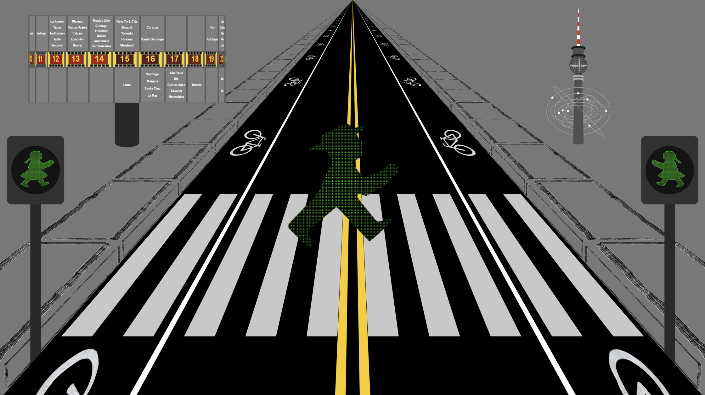

THE MONATOMIC CLOCK
WHERE SPACE MEETS TIME
The Monatomic Clock is a generative digital timepiece named after the noble, single-atom gases that give neon lighting its electric glow. Translating iconic luminous architecture into a living light sculpture, the clock continuously measures the passage of hours through the visual language of vintage neon, kinetic signs, and roadside typography.
Inspiration & Personal Cartography
"The Monatomic Clock serves as an autobiographical map."
The Core Clock journals the arc of the artist's life by charting childhood neighborhoods, university years, travels and residencies abroad, and returning to the United States to raise a family.
Interspersed throughout, the hidden complications commemorate the specific people, milestones, and turning points that define that journey. Each luminous sign acts as an anchor in memory, pulling both artist and viewer back to pivotal places and moments in time.
Visual Complication Artifacts

Modes of Engagement
For the Visual Enthusiast
A vibrant celebration of neon aesthetics, saturated color theory, and dynamic digital light evolving through generative palettes.
For the Horologist
A functional, living timepiece operating on twelve structured 5-minute visual movements that methodically cycle through each hour.
For the Traveler
An illuminated cartography featuring overlaid location complications—from London’s OXO Tower and Boston’s Citgo sign to classic California beacons like Bakersfield’s Padre Hotel, Culver City’s Helms Bakery, and the Malibu Pier.
How the Clock Tells Time
The clock operates on two synchronous layers of custom logic:
The Core Clock
The engine that anchors real time. Every hour is divided into twelve distinct 5-minute movements. As time advances, the clock cycles through an architectural sequence of imagery, providing subtle horological markers rather than traditional numbers.
Dynamic, evolving palettes ensure the display rarely repeats the exact same aesthetic twice.
The Hidden Details
Layered over the main timekeeping engine are twenty-five visual complications. These Easter eggs are triggered by physical coordinates, specific calendar dates, or controlled chance.
When activated, they superimpose unique graphic emblems and geographic designs onto the face before dissolving back into the core movement.
Schedule of Complications
5-Minute Hourly Movements
| Complication Name | Location | Display Time |
|---|---|---|
| GRAND CENTRAL STATION | NEW YORK | :00 – :05 (every hour) |
| CITGO | KENMORE SQUARE, MA | :05 – :10 (every hour) |
| BOND CLOTHES | TIMES SQUARE, NY | :10 – :15 (every hour) |
| SCHWEPPES | MADRID, SPAIN | :15 – :20 (every hour) |
| MARTINI SIGN | FLORENCE, ITALY | :20 – :25 (every hour) |
| OXO GHERKIN THE EYE | LONDON, ENGLAND | :25 – :30 (every hour) |
| DIM SUM | HONG KONG | :30 – :35 (every hour) |
| HI-HO MOTEL | FAIRFIELD, CT | :35 – :40 (every hour) |
| HELM'S BAKERY | CULVER CITY, CA | :40 – :45 (every hour) |
| PADRE HOTEL | BAKERSFIELD, CA | :45 – :50 (every hour) |
| BEST WESTERN | LONG BEACH, CA | :50 – :55 (every hour) |
| TEST PATTERN | KENNEDY SPACE CENTER | :55 – :60 (every hour) |
Easter Egg Complications
| Complication Name | Location | Display Time |
|---|---|---|
| HEINZ KETCHUP | PITTSBURGH, PA | [4:57] [7:57] [11:57] AM/PM |
| UNION OYSTER HOUSE | BOSTON, MA | [11:13] [2:13] [6:13] AM/PM |
| URTH CAFFE | LOS ANGELES, CA | [6:06] [9:06] [1:06] AM/PM |
| MCSORLEYS | GREENWICH VILLAGE, NY | [6:54] [9:54] [1:54] AM/PM |
| FARMACIA | ROME, ITALY | [10:34] [1:34] [5:34] AM/PM |
| HERCULES FLOOR | MALIBU, CA | [5:17] [8:17] [12:17] AM/PM |
| LINCOLN HARDWARE | SANTA MONICA, CA | [10:31] [1:31] [5:31] AM/PM |
| 256 FARBEN - GERHARD RICHTER | MOMASF, SAN FRANCISCO, CA | [8:10] [11:10] [3:10] AM/PM |
| RABBIT EARS MOTEL | STEAMBOAT SPRINGS, CO | [7:03] [10:03] [2:03] AM/PM |
| TUCSON CACTUS | TUCSON, AZ | [3:05] [6:05] [10:05] AM/PM |
| MANHATTAN BRIDGE | EAST RIVER, NY | [9:18] [12:18] [4:18] AM/PM |
| BRITEX FABRICS | SAN FRANCISCO, CA | [7:29] [10:29] [2:29] AM/PM |
| NYC MTA | NEW YORK, NY | [12:04] [3:04] [7:04] AM/PM |
| LEONARD'S DONUTS | HONOLULU, HI | [6:11] [9:11] [1:11] AM/PM |
| WHITE STAG | PORTLAND, OR | [7:25] [10:25] [2:25] AM/PM |
| MALIBU PIER | MALIBU, CA | [8:28] [11:28] [3:28] AM/PM |
| DOMINO SUGAR | BALTIMORE, MD | [5:08] [8:08] [12:08] AM/PM |
| COLGATE CLOCK | JERSEY CITY, NJ | [1:09] [4:09] [8:09] AM/PM |
| STOMATOL TOOTHPASTE | STOCKHOLM, SWEDEN | [3:11] [6:11] [10:11] AM/PM |
| THERMOMETER | COPENHAGEN, DENMARK | [6:32] [9:32] [1:32] AM/PM |
| AMPELMANN CROSSWALK | BERLIN, GERMANY | [8:26] [11:26] [3:26] AM/PM |
| SKIPPING GIRL VINEGAR | MELBOURNE, AUSTRALIA | [1:32] [4:32] [8:32] AM/PM |
| SAM THE RECORD MAN | TORONTO, CANADA | [2:26] [5:26] [9:26] AM/PM |
| THE MOULIN ROUGE | PARIS, FRANCE | [1:34] [4:34] [8:34] AM/PM |
| PYRAMIDS | LUXOR, EGYPT | [4:23] [7:23] [11:23] AM/PM |
The Monatomic Clock Film
Watch the short film exploring the artistic philosophy, architectural inspiration, and generative mechanics behind the Monatomic Clock.